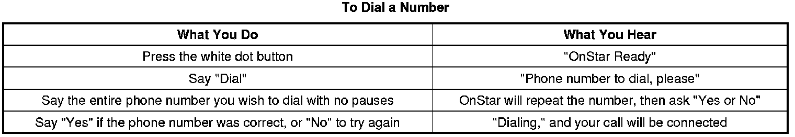
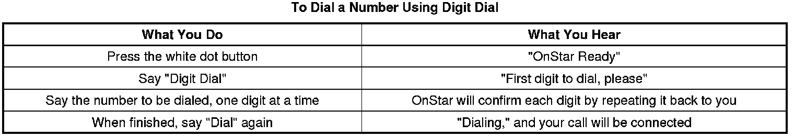
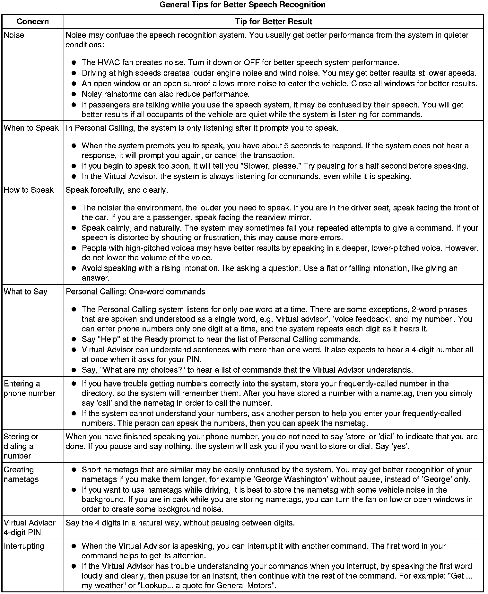
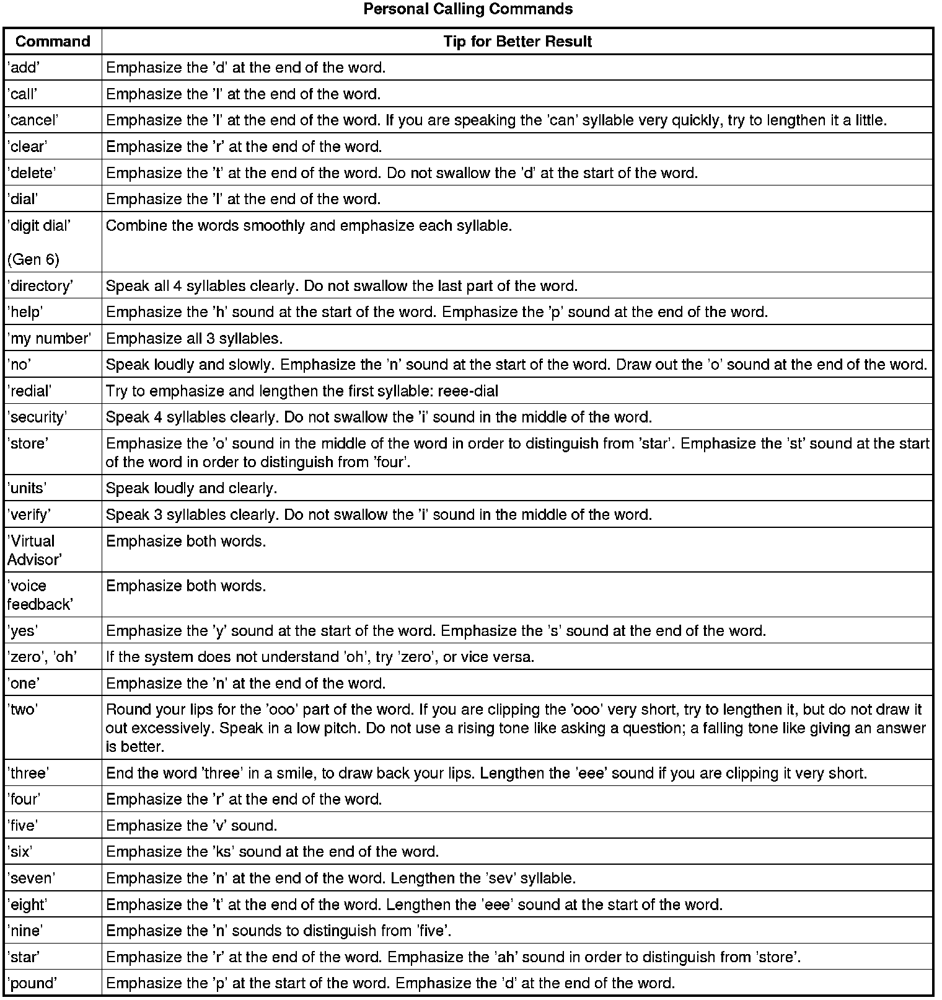

OnStar Description and Operation
OnStar Description and Operation
This vehicle uses the Generation 6.1 version of the OnStar(R) system. This system consists of the following components:
* Vehicle communication interface module (VCIM)
* OnStar(R) button assembly
* Microphone
* Cellular antenna
* Navigation antenna
This system also interfaces with the factory installed vehicle audio system.
Vehicle Communication Interface Module (VCIM)
The vehicle communication interface module (VCIM) is a 3-watt cellular device that allows the user to communicate data and voice signals over the national cellular network. It is powered by a fused, battery positive, voltage circuit connected through the vehicle wiring to the 3-button assembly and the radio, and attached by means of coax cables to the cellular and navigation antennas. Ground for the module is accomplished by means of dedicated circuits that are routed with body wiring systems to chassis ground points. The module houses 2 modems, one to process global positioning system (GPS) data, and the other for cellular information. Satellites orbiting earth are constantly transmitting signals of their current location, from which the OnStar(R) system is able to pinpoint its own location. The navigation antenna receives these GPS signals and provides the data to the VCIM to be processed. The VCIM communicates with the rest of the vehicle over the class 2 or GMLAN serial data bus, depending upon the serial data architecture of the vehicle. The ignition state is determined by the VCIM through class 2 or GMLAN messaging. The module also has the capability of commanding the horn, initiating door lock/unlock and operating the exterior lamps using the serial data circuits. When an OnStar(R) keypress is made, a serial data message is sent to the audio system to mute all radio functions and transmit OnStar(R) originated audio. After the audio system is muted, the OnStar(R) signals are transmitted to the audio system on the cellular telephone voice signal circuit, and returned to the module on the cellular telephone voice low reference circuit. The cellular modem connects the OnStar(R) system to the cellular carriers communication system by interacting with the national cellular infrastructure. The module sends and receives all cellular communications over the cellular antenna and cellular antenna coax.
OnStar(R) Button Assembly
The OnStar(R) button assembly may be part of the rearview mirror on some vehicles or a separate unit on others. The button assembly is comprised of 3 buttons and a status LED. The buttons are defined as follows:
* The answer/end call button, which is black with a white phone icon allows the user to answer and end calls or initiate the personal calling feature, if equipped.
* The blue OnStar(R) call center button, which displays the OnStar(R) logo, allows the user to connect to the OnStar(R) call center.
* The emergency button, which displays a white cross with a red background, sends a high priority emergency call to the OnStar(R) call center when pressed.
The OnStar(R) button assembly receives 10 volts on the keypad supply voltage circuit. When pressed, each button completes a circuit across a resister allowing a specific voltage to be returned to the vehicle communication interface module (VCIM) on the keypad signal circuit. Depending upon the voltage range returned, the VCIM is able to identify which button has been pressed.
The OnStar(R) status LED is located to the right of the emergency button on a mirror-mounted assembly and to the left of the answer/end call button when the assembly is mounted on the dash or overhead console. The LED is green when the system is ON and operating normally. When the status LED is green and flashing, it is an indication that a call is in progress. When the LED is red, this indicates a system malfunction is present. In the event there is a system malfunction and the OnStar(R) system is still able to make a call, the LED will flash red during the call. The OnStar(R) LED is controlled by the VCIM over the keypad red LED signal circuit and the keypad green LED signal circuit.
OnStar(R) Microphone
The OnStar(R), or cellular microphone can be part of the rearview mirror assembly, or on some vehicle lines, can be a separate, stand alone unit. In either case, the microphone is supplied voltage on the cellular microphone signal circuit, while voice data from the user is sent back to the vehicle communication interface module (VCIM) by means of either a cellular microphone low reference circuit or a drain wire.
Cellular and Navigation Antennas
This vehicle will be equipped with one of the following types of antennas:
* Separate, standalone cellular and navigation antennas
* A combination cellular and navigation antenna, which brings the functions of both into a single part
* A cellular, navigation, and digital radio antenna, which also incorporates the functionality of the digital radio receiver satellite and terrestrial antennas (XM)
The cellular antenna is the component that allows the OnStar(R) system to send and receive data over airwaves by means of cellular technology. This antenna is connected at the base to a coax cable that plugs directly into the vehicle communication interface module (VCIM). The navigation antenna is used to collect the constant signals of the orbiting satellites. Within the antenna, is housed a low noise amplifier that allows for a more broad and precise reception of this data. The current global positioning system (GPS) location is collected by the module every time a keypress is made. The OnStar(R) Call Center also has the capability of pinging the vehicle during an OnStar(R) call, which commands the module to retrieve the latest GPS location and transmit it to the OnStar(R) Call Center. A history location of the last recorded position of the vehicle is stored in the module and marked as aged. In the event the VCP loses, or is removed from power, this history location is used by the OnStar(R) Call Center as a default. Actual GPS location may take up to 10 minutes to register in the event of a loss of power. This antenna requires a clear and unobstructed path to the satellites in the sky. Window tinting on vehicles may interfere with the GPS sensor functions, depending upon the location of the GPS antenna and the amount of darkening and/or metallic particles that are embedded in the film of the tinting material.
OnStar(R) Sleep Cycle
The OnStar(R) system uses a unique sleep cycle to allow the system to receive cellular calls while the ignition is in the OFF position. This cycle enables the vehicle communication interface module (VCIM) to perform remote functions, such as door unlock, as commanded over the air by the OnStar(R) Call Center, when requested by the customer, and to continue to maintain an acceptable level of battery electrical drain.
The Generation 6.1 version of OnStar(R) uses 4 states of readiness, depending upon the type of cellular market the vehicle is in when the ignition is put into the OFF state:
* High power
* Low power
* Sleep
* Digital standby
When in an analog cellular market, the high power state is in effect whenever the ignition is in the ON or RUN position, and enables the OnStar(R) system to send and receive cellular calls and perform all remote functions. The low power state is entered once the vehicle ignition is placed in the OFF position and the retained accessory power (RAP) function has been turned OFF, or times out. This state will last for 1 minute and allows incoming cellular calls to be received. After the 1 minute window, the OnStar(R) system moves to the sleep state. This state will not recognize or receive incoming cellular calls. At a predetermined time recorded within the VCIM, up to 9 minutes, the system re-enters the low power state to listen for a call from the OnStar(R) Call Center for 1 minute. After this interval, the system will again return to the sleep state for 9 minutes. After these 9 minutes, the system will again enter the low state of power and listen for any incoming calls that the OnStar(R) Call Center may be sending. In the event a call is being sent, the OnStar(R) system will receive the call and immediately go into the high power mode to perform any requested functions. If no call is received during the 1 minute interval, the system will go back into the sleep mode for another 9 minutes. This process will continue for up to 48 hours, after which, the OnStar(R) system will permanently enter the sleep state until the ignition is once again turned to the ON or RUN position.
In a digital cellular service market the high power state is in effect whenever the ignition is in the ON or RUN position, and also enables the OnStar(R) system to send and receive cellular calls and perform all remote functions. The digital standby power state is in effect after the vehicle has been shut off and the RAP has timed out. When in digital standby mode, the OnStar module is able to perform all remote functions as commanded by an OnStar advisor at any time, for a continuous 8 hours. After 8 hours, the OnStar module will follow the standard sleep state as though in an analog cellular market (9 minutes OFF, 1 minute of digital standby, based on the time of the global positioning system (GPS) signals).
In the event the OnStar(R) system loses, or is temporarily removed from battery power, the system will remain in the sleep state while the key in the OFF position. It will not begin to cycle until the vehicle passes into an open outside area with the ignition ON, where a GPS signal can be acquired, providing a reference for time. The OnStar(R) Call Center is able to maintain a record of exactly what time each vehicle will enter the 1 minute low power state by synchronizing their clocks with those of the vehicle, based on GPS signals.
Deactivated OnStar(R) Accounts
In the event a customer has not renewed their OnStar(R) account after expiration or the account was never activated, OnStar(R) will make a discrete cellular call to the vehicle to deactivate the OnStar(R) system. Before taking this action, customers are notified that the OnStar(R) system in their vehicle will be deactivated unless they elect to renew the account. After the vehicle has been successfully deactivated, customers will experience the following when attempting to contact OnStar(R) from their vehicle:
* During an OnStar(R) Call Center button press, the customer will be connected to a dedicated sales team who can sell an OnStar(R) subscription and reactivate the vehicle. Depending on the type of OnStar(R) hardware in the vehicle, the customer may first hear a demonstration message stating there is no current OnStar(R) subscription for the vehicle, and directing the customer what to do to activate services.
* During an emergency button press, a demo message will be played indicating the service has been deactivated.
* OnStar(R) personal calling (OPC) will not be available, as this feature requires the customer to have a current OnStar(R) account. Attempts to use this feature may result in cellular connection failure messages and the inability to connect to the number dialed.
It is of particular note, that when an OnStar(R) system is successfully deactivated, it will NOT attempt to connect to the OnStar(R) Call Center in the event of a collision or if the vehicle's front air bags deploy for any other reason.
Certain vehicles that have never had an active OnStar(R) account, that have been deactivated, may be unable to establish a connection with the OnStar(R) Call Center. When normal published diagnostic procedures do not indicate a possible cause for the no connect concern, the vehicle may have been deactivated. For deactivated vehicles, a no connect response should be considered normal operation. Further diagnosis and subsequent repair is only necessary should the customer elect to become an active OnStar(R) subscriber.
OnStar(R) Reconfiguration Procedure
Within the vehicle communication interface module (VCIM) are a set of unique numbers that identify the OnStar(R) customer and the specific vehicle the module resides in. These numbers, the station identification number (STID) and the electronic serial number (ESN) are transmitted over the cellular network when an OnStar(R) keypress is made and are essential for proper identification and connection to the OnStar(R) Call Center. In the event the VCIM requires replacement, the OnStar(R) reconfiguration procedure must be performed. This procedure allows for the new STID and ESN within the replacement module to overwrite the old numbers and update customer and vehicle information at the OnStar(R) Call Center. The reconfiguration process is explained within the VCIM replacement procedure, or the OnStar(R) Reconfiguration Procedure found in the Cellular Communication diagnostic information and procedures section.
The default language for the new VCIM is English. Refer to Module Setup screen on the scan tool, within the Cellular Information section, if the customer requests French or Spanish Voice Recognition.
OnStar(R) Cellular, GPS, and Diagnostic Limitations
The proper operation of the OnStar(R) System is dependent on several elements outside the components integrated into the vehicle. These include the National Cellular Network Infrastructure, the cellular telephone carriers within the network, and the global positioning system (GPS) .
The cellular operation of the OnStar(R) system may be inhibited by factors such as the user's range from an analog or digital cellular tower, the state of the cellular carriers' equipment, and the location where the call is placed. Making an OnStar(R) keypress in areas that lack sufficient cellular coverage or have a temporary equipment failure will result in either the inability of a call to complete with a data transfer or the complete inability to connect to the OnStar(R) Call Center. The OnStar(R) system may also experience connection issues if the identification numbers for the module, station identification number (STID) and electronic serial number (ESN), are not recognized by the cellular carriers local signal receiving towers. OnStar(R) cellular connection issues such as these require the assistance of the General Motors Technical Assistance Center OnStar(R) Group, which coordinates with cellular carriers to resolve connection issues.
The satellites that orbit earth providing the OnStar system with GPS data have almost no failures associated with them. In the event of a no GPS concern, the failure will likely lie with the inability of the system to gain GPS signals because of its location, i.e. in a parking structure, hardware failure, or being mistaken with an OnStar(R) call which has reached the Call Center without vehicle data.
During diagnostic testing of the OnStar(R) system, the technician should ensure the vehicle is located in an area that has a clear unobstructed view of the open sky, and preferably, an area where analog or digital cellular calls have been successfully placed. These areas can be found by successfully making an OnStar(R) keypress in a known good OnStar(R) equipped vehicle and confirming success with the OnStar(R) Call Center advisor. Such places can be used as a permanent reference for future OnStar(R) testing.
OnStar(R) Personal Calling
The hands free, OnStar(R) personal calling (OPC) cellular phone feature is an additional option to the OnStar(R) system. This feature is already embedded within the vehicle communication interface module (VCIM), however, it must be activated by an OnStar(R) advisor. This is done most often during the initial OnStar(R) configuration, if the home location of the vehicle is in a geographic area where OnStar(R) personal calling is available. In the event this feature is not enabled, customers may connect to the OnStar(R) Call Center by pressing the blue OnStar(R) button, and asking an advisor if OPC is available in their area. Users of the Generation 6.1 OnStar(R) system can verify the system has been configured for OnStar(R) Personal Calling by pressing the answer/end call button, waiting for the system to respond "OnStar Ready" then speaking the word "dial." If the system responds with a failure message, the system has not been configured for OPC. All other responses confirm that OPC has been enabled.
Operation of the Hands Free Cellular Phone
Onstar(R) personal calling (OPC) operates similar to most hand held cellular phones in that the availability for its usage is based on minutes or units. The customer must have a current OnStar(R) subscription, as this feature cannot be utilized without it. To use OPC, the customer must also purchase units as outlined in the owner's guide provided with the OnStar(R) system. When the customer purchases minutes, an OnStar(R) advisor loads these minutes into the vehicle communication interface module (VCIM) over the airwaves at the time of the request, or through a discrete cellular call to the vehicle at a later time. Once loaded into the module, the units may be used for non-international, outbound cellular phone calls, and connection with the OnStar(R) virtual advisor. Units begin to deplete, 1 unit is equal to 1 minute, as the customer makes outbound phone calls, answers inbound phone calls, or while connected to the OnStar(R) virtual advisor. In addition, units also have an expiration date, depending upon the type of units purchased. This date is established when the download is performed, and any remaining units expire when the date within the VCIM, which is based on current date and the time transmitted by global positioning system (GPS) satellites, has passed. At any time, the user can press the answer/end call button, say "Units" and verify the number of units remaining.
During a hands free call, the microphone and audio system operate the same way as a standard OnStar(R) call. When the answer/end call button is pressed, the audio system will mute; the OnStar(R) system will then return the prompt "OnStar Ready." At this point there are specific commands set to initiate a cellular call. If the vehicle receives a call when the radio is ON, the audio system will mute and an audible ring will be heard though the speakers. The call will be answered when the answer/end call button is pressed.
The VCIM interprets all of the voice-activated commands. A complete list of these commands is supplied in the information provided to the customer. If the information is not available to reference, at any command prompt the caller can say "HELP" and the VCIM will return an audible list of available commands. If the customer concern is not being understood or not being heard by the OnStar(R) system, the user should place a call to the OnStar(R) call center to verify proper operation of the microphone. Following this description is an example of the commands and the OnStar(R) system responses. A complete list of commands is supplied in the information provided to the customer with the OnStar(R) system.
OnStar(R) Steering Wheel Controls
Some vehicles equipped with the OnStar(R) system have the capability of accessing voice mailboxes and other automated phone systems by means of the steering wheel controls, while the OnStar(R) personal calling (OPC) feature is in use. If the Talk or Mute button, depending upon the vehicle, on the steering wheel controls are depressed during an OPC call, the vehicle communication module (VCIM) receives the message on the class 2 serial data bus from either the radio, the driver information module, or the body control module (BCM). This message is interpreted as a request to turn any spoken numbers into dual tone multi-frequency (DTMF) tones to be delivered over the airwaves to the phone system the user is communicating with. Complete instructions for operation of these features can be found in the information provided to the customer with the OnStar(R) system.
The steering wheel controls are a resistor network that consist of multiple momentary contact switches and a series of resistors. The switches and resistor network are arranged so that each switch has a different resistance value. When a switch is pressed, a voltage drop occurs in the resistor network, which produces a specific voltage value unique to the switch selected, to be interpreted by either the radio, driver information module, or BCM.
OPC Features
The following is an abbreviated list of features that may have an impact for the technician when servicing or diagnosing an OnStar(R) system. For a full list of OnStar(R) personal calling (OPC) features, consult the owner's guide provided to the customer with the OnStar(R) system.
Voice Feedback
The OnStar(R) personal calling (OPC) system has the capability of responding to the user with either an automated voice response or with a tone or beep. These 2 types of responses can be switched back and forth by pressing the answer/end call button, waiting for the system to respond "OnStar Ready" and speaking the phrase "voice feedback." The system will then respond, "voice feedback is now ON/OFF."
OPC Security/System Lock
Customers have the capability to lock their OnStar(R) personal calling (OPC) system by pressing the answer/end call button, speaking "security" and entering a 4-digit code. Once this process is complete, the user must enter the code before OnStar(R) personal calling is available. In the event the customer cannot remember their code and is unable to use their system, they can press the blue OnStar button and speak to an advisor to unlock the system by means of a discrete cellular call to the vehicle.
Nametags
Customers have the ability to store telephone numbers within the module, referenced by a nametag for the convenience of frequently dialed numbers. This process is initiated by pressing the answer/end call button, waiting for the system response, then speaking the response "store". The system will respond with "number please" at which time the user should enter the number desired to be stored. Once complete, saying the word "store" again lets the system know you are finished entering the number. At this time, the system will elicit the user to assign a nametag to that number. From this point forward, the user can dial this number by initiating the OnStar(R) personal calling (OPC) feature, speaking the word "call," and repeating the nametag assigned. To delete a nametag, the user should initiate OPC, say "delete" then speak the nametag to be removed. In the event a nametag cannot be deleted in spite of repeated attempts from several speakers, the OnStar(R) module will require replacement.
Mobile Identification Number and Mobile Directory Number
The Generation 6.1 vehicle communication interface module (VCIM) utilizes 2 numbers for cellular device identification, call routing and connection, a mobile identification number (MIN) and a mobile directory number (MDN). The MIN represents the number used by the cellular carrier for call routing purposes while the MDN represents the number dialed to reach the cellular devise. Although technicians have the capability to change these numbers by means of the scan tool, this should ONLY be done at the direction of and with explicit instruction from General Motors Technical Assistance Center (GM TAC).
Placing a Call

After 3 unsuccessful tries, or if you simply like it better, you can use the "Digit Dial" command to input digits one at a time. Digit Dial is set up to dial phone numbers like previous OnStar Personal Calling Systems.

Operation of the OnStar(R) Speech Recognition Systems
OnStar(R) Generation 6.1 users communicate with 2 speech recognition systems. Speech recognition allows the user to speak to one computer in the vehicle, and one reached over a phone line. The computer tries to understand the users command, and responds by speaking back, or by taking the appropriate action, e.g. dialing the phone.
* Personal Calling uses a speech recognition system that resides in the vehicle. When the user presses the dot button, the system states, Ready, and listens for the user's command. The user can speak commands to control the hands-free phone.
* Virtual advisor is a remote speech recognition system that the caller access by making a phone call. The user connects to virtual advisor by requesting it during personal calling use. The user is then transferred to the virtual advisor server and talks to it via a cellular connection.
The OnStar(R) speech recognition systems use speech technology that is designed to understand a wide range of American English speakers. Although there is no one right way to speak English, the system will work best when users try to modify their pronunciation should they encounter difficulty. Users who do not obtain good results are advised to try the tips and workarounds found in this section.

